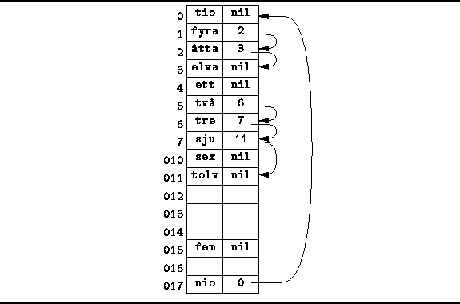
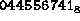
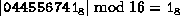
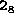
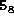
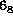

Data Structures and Algorithms
with Object-Oriented Design Patterns in Java
Data Structures and Algorithms
with Object-Oriented Design Patterns in Java
Figure  illustrates a
chained scatter table .
The elements of a chained scatter table are ordered pairs.
Each array element contains a key and a ``pointer.''
All keys are stored in the table itself.
Consequently, there is a fixed limit on the number of items
that can be stored in a scatter table.
illustrates a
chained scatter table .
The elements of a chained scatter table are ordered pairs.
Each array element contains a key and a ``pointer.''
All keys are stored in the table itself.
Consequently, there is a fixed limit on the number of items
that can be stored in a scatter table.

Figure: Chained scatter table.
Since the pointers point to other elements in the array, they are implemented as integer-valued array subscripts. Since valid array subscripts start from the value zero, the null pointer must be represented not as zero, but by an integer value that is outside the array bounds (say -1).
To find an item in a chained scatter table, we begin by hashing that item to determine the location from which to begin the search. For example, to find the string "elva", which hashes to the value , we begin the search in array location . The item at that location is "fyra", which does not match. So we follow the pointer in location to location . The item there, "fyra", does not match either. We follow the pointer again, this time to location where we ultimately find the string we are looking for.
Comparing Figures and ,
we see that the chained scatter table has embedded within
it the linked lists which appear
to be the same as those in the separately chained hash table.
However, the lists are not exactly identical.
When using the chained scatter table,
it is possible for lists to coalesce .
For example, when using separate chaining, the keys "tre" and "sju" appear in a separate list from the key "tolv". This is because both "tre" and "sju" hash to position , whereas "tolv" hashes to position . The same keys appear together in a single list starting at position in the chained scatter table. The two lists have coalesced.
 Copyright © 1998 by Bruno R. Preiss, P.Eng. All rights reserved.
Copyright © 1998 by Bruno R. Preiss, P.Eng. All rights reserved.